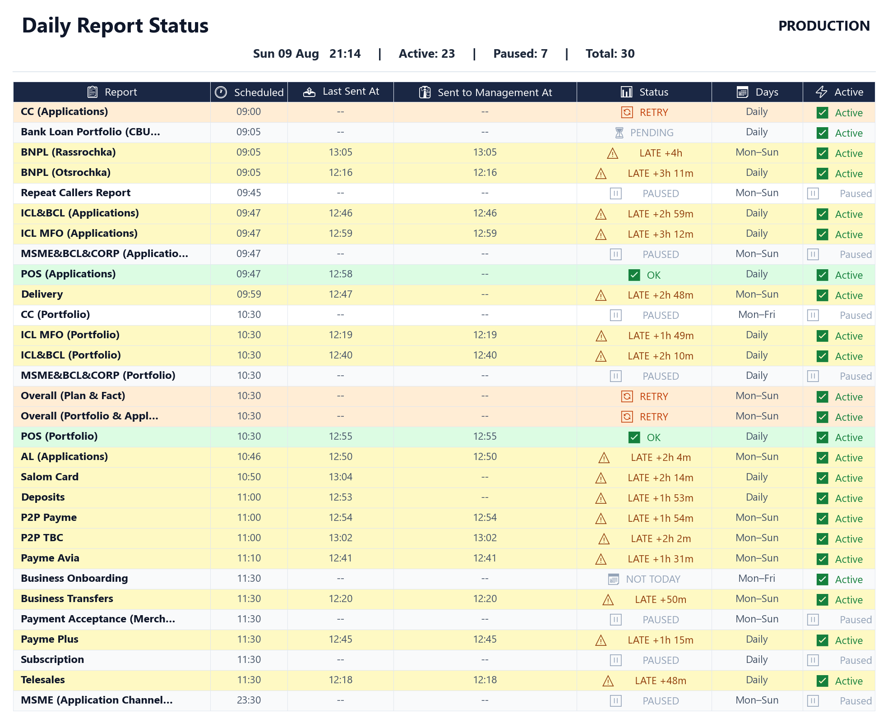
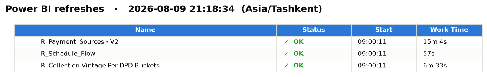
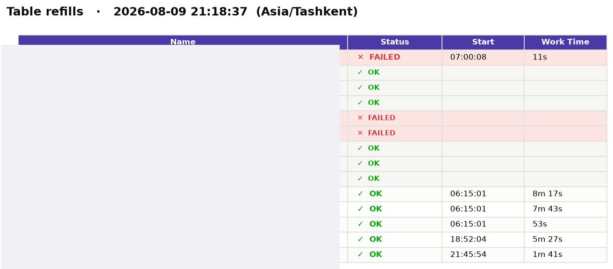

PythonFastAPISQL ServerStarRocksPower BI REST APISlack APIHTML / CSS / JS
Capabilities
🚦
Refresh Gating
SQL pre-checks before every Power BI refresh
🔁
Materializer
Scheduled rebuild of heavy reporting tables
📊
Slack Status Board
Real-time PNG health dashboard
🐛
Report Tasks
Auto-filed issues on repeated job failure
Internal Web Tool
Control Center
A CONTROL PLANE FOR COLLECTIONS REPORTING INFRASTRUCTURE
A FastAPI + static-frontend web app I designed and built to run the operational backbone behind the team's collections reporting: it gates every Power BI dashboard refresh behind a live SQL health-check suite so nothing refreshes on stale data, runs scheduled "materializer" jobs that rebuild expensive derived tables from refill scripts instead of hitting a heavy live view, and posts a real-time status board to Slack so the team can see the health of every job at a glance — with issues automatically tracked when a job fails repeatedly.
THE PROBLEM I SOLVED
Before
Dashboards refreshed on a timer regardless of whether the underlying data was actually ready — so a late upstream load meant stakeholders saw a dashboard confidently showing yesterday's (or wrong) numbers, with no signal that anything was off. Failures were diagnosed after the fact, by someone noticing something looked wrong.
After
Every refresh runs through a pre-check gate first — if the data isn't ready, the refresh is blocked and logged instead of quietly running on stale numbers. A live Slack status board shows every job's health at a glance, and a job that keeps failing automatically opens a tracked issue instead of relying on someone to notice.
Live Status Board

Live production status board — every scheduled job's health at a glance
SYSTEM ARCHITECTURE
🕐Scheduler Trigger
▶
🚦Pre-check Suite
▶
🗄️SQL Server / StarRocks
▶
📊Power BI Refresh
▶
💬Slack Status Board
🔁Materializer Job
▶
🗄️Refill Script
▶
📦Rebuilt Table
🐛Repeated Failure
▶
📋Report Task Auto-Filed
THE WEB APP, IN ACTION
CAPABILITY DOCUMENTATION
Refresh Gating
precheck_gate
Data-Readiness Layer
Before any Power BI dashboard refreshes, a suite of SQL health checks runs against the relevant tables — row counts look sane, key checks aren't null, data has actually landed for the expected date. Only if every check passes does the refresh fire; otherwise it's blocked and logged, so a dashboard never silently shows stale or broken numbers.
Each dashboard has its own configurable set of pre-check queries
A blocked refresh is logged with exactly which check(s) failed, not just "refresh failed"
Runs on a schedule, independent of any one report's own retry logic

precheck_gate.py — illustrative pattern, not the real production script
def run_precheck_suite(dashboard_id: str) -> list[CheckResult]:
checks = load_checks_for(dashboard_id) # one SQL query per check
results = []
for check in checks:
try:
row = run_query(check.sql, timeout=check.timeout)
results.append(CheckResult(check.name, passed=check.evaluate(row)))
except Exception as e:
results.append(CheckResult(check.name, passed=False, error=str(e)))
return results
def refresh_if_ready(dashboard_id: str):
results = run_precheck_suite(dashboard_id)
if all(r.passed for r in results):
trigger_powerbi_refresh(dashboard_id)
else:
log_blocked_refresh(dashboard_id, [r for r in results if not r.passed])
Materializer
materializer_job
Scheduled Table Rebuild
Some dashboards depend on a heavy, expensive-to-query view. Instead of hitting that view live on every refresh, a scheduled job periodically runs a "refill" SQL script that rebuilds a physical table from it — so downstream reports read from a fast, pre-computed table instead of recomputing an expensive query on demand. The same pre-check pattern gates whether a materializer run is even attempted.
Refill scripts are just SQL files — adding a new materialized table doesn't require touching the scheduler code
Each run's pre-check results are visible on the status board, so a stalled refill is obvious immediately
Doubles as a live "is the warehouse connection healthy" canary — if every check suddenly fails at once, that's a connectivity signal, not a data bug

materializer_job.py — illustrative pattern, not the real production script
def run_materializer(job: MaterializerJob) -> RunResult:
checks = run_precheck_suite(job.dashboard_id)
if not all(c.passed for c in checks):
return RunResult(status="blocked", checks=checks)
run_sql_script(job.refill_script_path) # rebuilds the physical table
log_run(job.id, status="completed", checks=checks)
post_status_update(job.id) # renders the Slack status board
return RunResult(status="completed", checks=checks)
Slack Status Board
status_board
Monitoring Dashboard
Renders a real-time status board as an image and posts it to a Slack channel, so the team can see the health of every job — refreshes, materializer runs, pre-checks — at a glance, without opening a separate tool. Each update replaces the previous message so there's always exactly one current status card.
Colour-coded per job: passing, blocked, and failed states are visually distinct at a glance
Made crash-safe so a rendering failure never leaves the board stuck on stale data
Rebuilt to post automatically after every scheduled run, not just on a fixed timer
status_board.py — illustrative pattern, not the real production script
def post_status_update(job_id: str):
board = render_status_image(get_all_job_states()) # one PNG, all jobs
try:
upload_to_slack(board, channel=STATUS_CHANNEL, replace_previous=True)
except Exception as e:
log_error("status_board_post_failed", job_id=job_id, error=str(e))
# never let a Slack posting failure take down the job itself
Report Tasks
report_tasks
Self-Tracking Reliability Layer
A lightweight issue tracker built into the tool itself: bugs, investigations, and follow-ups per report. When a linked job — a refresh or a materializer run — fails repeatedly, a task is auto-filed instead of relying on someone noticing the pattern in the status board. It also caught a real bug: a submit-conflict rejection from Power BI was being logged as the final failure reason instead of the actual underlying error, which I found and fixed while building this feature.
Auto-files a task after N consecutive failures on the same job, instead of on the first blip
Each task links back to the specific job run and its pre-check results
Manual tasks can be filed too — not just auto-generated ones
report_tasks.py — illustrative pattern, not the real production script
def record_run_result(job_id: str, result: RunResult):
save_run_history(job_id, result)
if result.status == "failed" and consecutive_failures(job_id) >= FAILURE_THRESHOLD:
if not has_open_task(job_id):
file_task(
job_id=job_id,
title=f"{job_id} failing repeatedly",
detail=result.error,
linked_run=result.run_id,
)